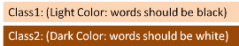

I want to show some images like this example
The fill color is decided by a field in the data base with the color in hex
(ex:ClassX -> Color: #66FFFF). Now, I want to show data above a fill with the
selected color (like in the image above) but i need to know if the color is
dark or light so i know if the words should be in white or black. Is there a
way? tks
Answer
Building on my answer to a similar question.
You need to break the hex code into 3 pieces to get the individual red, green,
and blue intensities. Each 2 digits of the code represent a value in
hexadecimal (base-16) notation. I won't get into the details of the conversion
here, they're easy to look up.
Once you have the intensities for the individual colors, you can determine the
overall intensity of the color and choose the corresponding text.
if (red*0.299 + green*0.587 + blue*0.114) > 186 use #000000 else use #ffffff
The threshold of 186 is based on theory, but can be adjusted to taste. Based
on the comments below a threshold of 150 may work better for you.
Edit: The above is simple and works reasonably well, and seems to have
good acceptance here at StackOverflow. However, one of the comments below
shows it can lead to non-compliance with W3C guidelines in some circumstances.
Herewith I derive a modified form that always chooses the highest contrast
based on the guidelines. If you don't need to conform to W3C rules then I'd
stick with the simpler formula above. For an interesting look into the
problems with this see Contrast Ratio Math and Related Visual Issues.
The formula given for contrast in the W3C Recommendations (WCAG 2.0) is (L1 +
0.05) / (L2 + 0.05), where L1 is the luminance of the lightest color and
L2 is the luminance of the darkest on a scale of 0.0-1.0. The luminance of
black is 0.0 and white is 1.0, so substituting those values lets you determine
the one with the highest contrast. If the contrast for black is greater than
the contrast for white, use black, otherwise use white. Given the luminance of
the color you're testing as L the test becomes:
if (L + 0.05) / (0.0 + 0.05) > (1.0 + 0.05) / (L + 0.05) use #000000 else use #ffffff
This simplifies down algebraically to:
if L > sqrt(1.05 * 0.05) - 0.05
Or approximately:
if L > 0.179 use #000000 else use #ffffff
The only thing left is to compute L. That formula is also given in the
guidelines and it looks like the conversion from sRGB to linear RGB followed
by the ITU-R recommendation BT.709 for luminance.
for each c in r,g,b:
c = c / 255.0
if c <= 0.04045 then c = c/12.92 else c = ((c+0.055)/1.055) ^ 2.4
L = 0.2126 * r + 0.7152 * g + 0.0722 * b
The threshold of 0.179 should not be changed since it is tied to the W3C
guidelines. If you find the results not to your liking, try the simpler
formula above.
Suggest
I take no credit for this code as it's not mine, but I leave it here for
others to find quickly in the future:
Based on Mark Ransoms answer, here's a code snippet for the simple version:
function pickTextColorBasedOnBgColorSimple(bgColor, lightColor, darkColor) {
var color = (bgColor.charAt(0) === '#') ? bgColor.substring(1, 7) : bgColor;
var r = parseInt(color.substring(0, 2), 16); // hexToR
var g = parseInt(color.substring(2, 4), 16); // hexToG
var b = parseInt(color.substring(4, 6), 16); // hexToB
return (((r * 0.299) + (g * 0.587) + (b * 0.114)) > 186) ?
darkColor : lightColor;
}
and here's the code snippet for the advanced version:
function pickTextColorBasedOnBgColorAdvanced(bgColor, lightColor, darkColor) {
var color = (bgColor.charAt(0) === '#') ? bgColor.substring(1, 7) : bgColor;
var r = parseInt(color.substring(0, 2), 16); // hexToR
var g = parseInt(color.substring(2, 4), 16); // hexToG
var b = parseInt(color.substring(4, 6), 16); // hexToB
var uicolors = [r / 255, g / 255, b / 255];
var c = uicolors.map((col) => {
if (col <= 0.03928) {
return col / 12.92;
}
return Math.pow((col + 0.055) / 1.055, 2.4);
});
var L = (0.2126 * c[0]) + (0.7152 * c[1]) + (0.0722 * c[2]);
return (L > 0.179) ? darkColor : lightColor;
}
To use them just call:
var color = '#EEACAE' // this can be any color
pickTextColorBasedOnBgColorSimple(color, '#FFFFFF', '#000000');
Also, thanks Alx and chetstone.